Znak dziennika: runda 2
Najpierw research, potem 10 szkiców w różnych kierunkach, z nich 3 finały dopracowane w wielkości od 16 do 512 px. Tożsamość bez zmian: tło #0b0e12, akcent #e8a44c. „Dziennik” to nazwa robocza (tekst roboczy).
Co sprawia, że znaki Mercury, Linear, Raycast, Arc i Things są ładne
Linear, Raycast i Arc to wypełnione bryły. Szczegół robi przestrzeń negatywna (cięcie, luka), nie cienka linia, która przy 16 px znika.
Linear: koło i ukośne cięcia. Things: jeden ptaszek. Znak zrozumiały w pół sekundy i opisywalny jednym zdaniem.
Glif zajmuje ok. 60% kafla (Things nawet więcej), na faviconie więcej niż w ikonie. Przy 16 px liczy się sylwetka.
Koła rysuje się nieco większe od kwadratów, a środek ciężkości ustawia lekko nad środkiem geometrycznym. Luka ma co najmniej 1 px przy 16 px.
Ciemny kafel z gradientem o kilka procent jasności, światło na górnej krawędzi i ciepła poświata pod glifem (Raycast, Mercury). Glif ma gradient w obrębie jednego koloru.
10 szkiców
Każdy szkic jako ikona aplikacji (112 px) i jako favicon w rzeczywistych 16 px, obok powiększony 4 razy. Obwódka w akcencie oznacza szkice, które przeszły do finału.
Krążek przecięty na poziomie, połowy rozsunięte: luka (FVG) i przemieszczenie.
Najmocniejsza sylwetka i ruch. Do finału.
Krążek z linią 50%: dół pełny, góra przygaszona, premium i discount.
Spokojny, ale przygaszona połowa wychodzi brązowa, a w obrysie zamienia się w koszyk. Odpadł przy dopracowaniu.
Strona dziennika z zagiętym rogiem i jedną szczeliną wpisu.
Czytelny, ale to ikona pliku z każdego systemu.
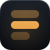
Trzy wpisy jeden pod drugim, środkowy pełny: rejestr dnia.
Wygląda jak ikona listy albo menu.
Dwa trójkąty czubkami do siebie: czas sesji i cierpliwość.
Klepsydra kojarzy się z ładowaniem i czekaniem.
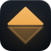
Romb rozcięty na poziomie: zakres z linią równowagi, ostry jak decyzja.
Najostrzejszy, dobrze niesie zakres. Do finału, z większą luką na 16 px.
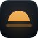
Półkole nad poziomą kreską: otwarcie sesji nad poziomem.
Najcieplejszy i najładniejszy w kaflu. Do finału.
Dwa narożniki zakresu, górny w akcencie: ramka dnia.
Czyta się jak narzędzie kadrowania zrzutu.
Pierścień przecięty poziomem wychodzącym poza obrys.
Kojarzy się z fi albo symbolem zakazu.
Krążek z wyciętym kołem: sesja azjatycka, noc przed otwarciem.
Ładny, ale to księżyc i tryb nocny.
3 finały
Finał A · ze szkicu 1
Przesunięcie
Krążek przecięty poziomą luką, górna połowa przesunięta w prawo: luka i przemieszczenie z ICT, jedna pełna forma w akcencie.
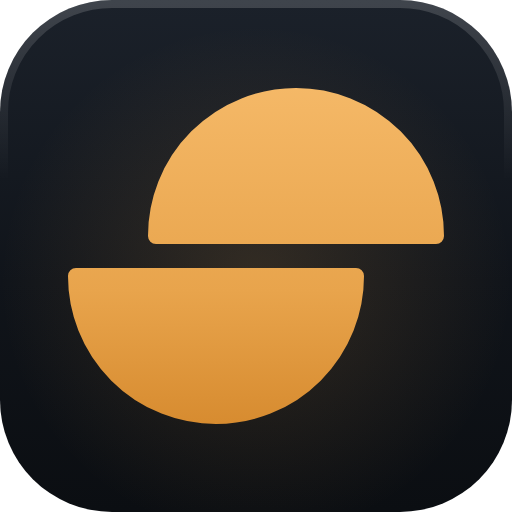
7/10. 10 wyglądałoby tak: ta sama sylwetka, ale z jednym własnym detalem widocznym od 180 px w górę (np. światło na krawędzi luki), i pewność, że rozcięty krążek nie przypomina znaków kryptowalut. Przy 16 px luka ma tylko 1,5 px i lekko się rozmywa.
Poprawione po ocenie: przesunięcie połówek z 3,5 do 5 jednostek (ruch jest wyraźny, nie wygląda na błąd), luka z 4 do 5, glif zmniejszony do ok. 57% kafla, rogi cięciwy zaokrąglone o 1 jednostkę, osobny większy rysunek na 16–32 px z luką 6.
Rozmiary
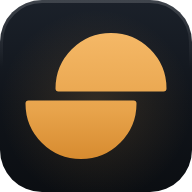
512 / 192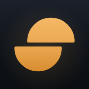
180 iOSMaskable (Android)
Karta przeglądarki
Ekran główny telefonu
Dziś
Przed sesjąPo sesjitekst roboczy
Finał B · ze szkicu 6
Zakres
Romb od szczytu do dołka rozcięty linią równowagi, połowy przesunięte: zakres dnia i przemieszczenie w ostrej, pełnej bryle.
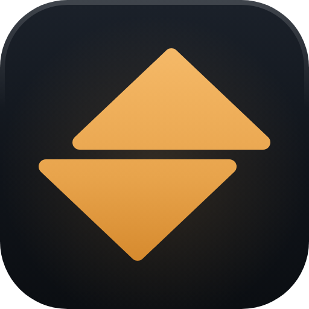
6/10. 10 wyglądałoby tak: romb czytany od razu jako zakres, bez skojarzenia ze strzałkami sortowania w górę i w dół, i z luką, która przy 16 px zostaje czystą kreską, a nie brązową smugą.
Poprawione po ocenie: połowy rozsunięte w poziomie (bez tego romb był ikoną sortowania), rogi zaokrąglone, na 16–32 px romb prawie na całą szerokość kafla i luka 6 jednostek.
Rozmiary
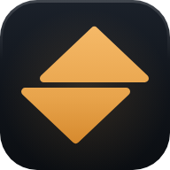
512 / 192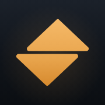
180 iOSMaskable (Android)
Karta przeglądarki
Ekran główny telefonu
Dziś
Przed sesjąPo sesjitekst roboczy
Finał C · ze szkicu 7
Horyzont
Pełne półkole w akcencie wschodzące nad jasnym poziomem: otwarcie sesji nad zaznaczonym poziomem, plan przed wejściem.
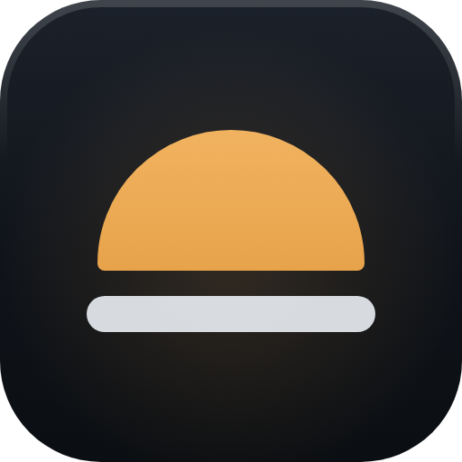
6,5/10. 10 wyglądałoby tak: forma tak samo ciepła, ale bez skojarzenia z aplikacją pogodową i ze wschodem słońca; jasny poziom konkuruje z akcentem, więc znak ma dwa środki ciężkości zamiast jednego.
Poprawione po ocenie: poziom skrócony z 46 do 40 jednostek i przyciemniony do 92%, żeby nie przykrywał półkola; luka 4 jednostki; na 16 px poziom grubszy (7 jednostek), bo cienki znikał.
Rozmiary
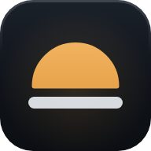
512 / 192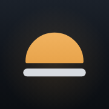
180 iOSMaskable (Android)
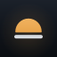
Karta przeglądarki
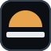
Dziś · DziennikEkran główny telefonu
Dziś
Przed sesjąPo sesjitekst roboczy
Siatka: 64 × 64. Ikona aplikacji: kafel r = 14 z gradientem tła #1b212a → #0b0e12, poświata akcentu 16%, światło na górnej krawędzi; glif z gradientem #f5b968 → #e8a44c → #d68a2e. Favicon: płaski kafel z ramką #35404d i osobny, większy rysunek glifu do 16–32 px. Maskable: pełne tło, glif w 80% (mieści się w kole bezpiecznym r = 40%). Apple touch 180: pełne tło, glif 92%.